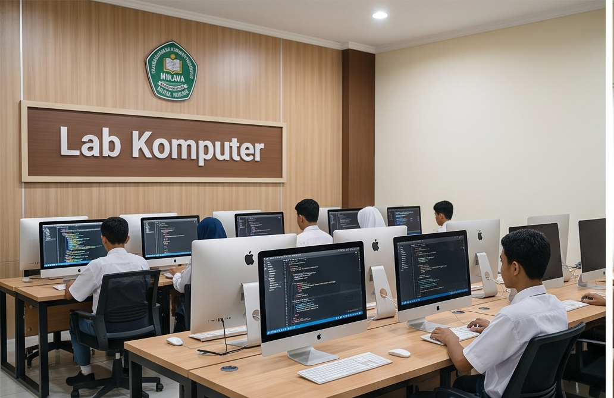
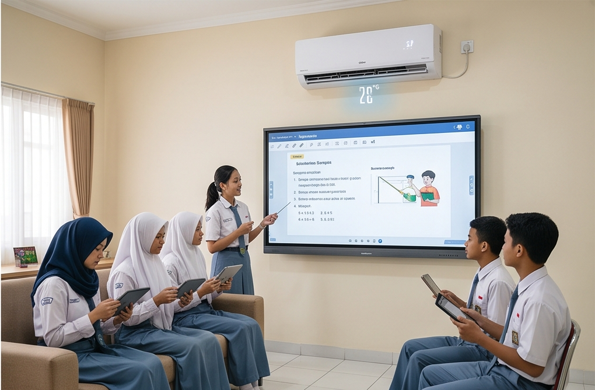
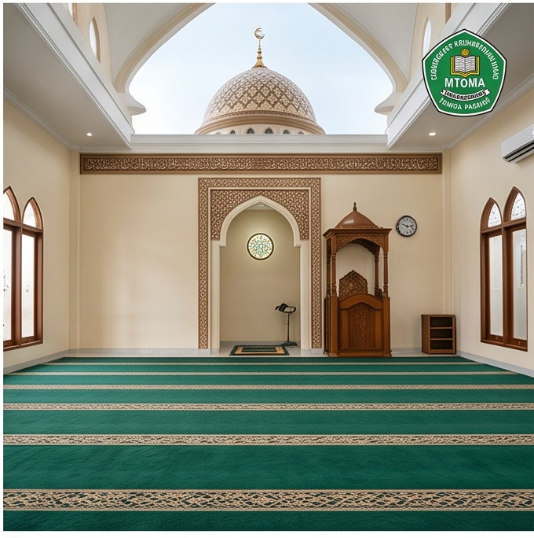
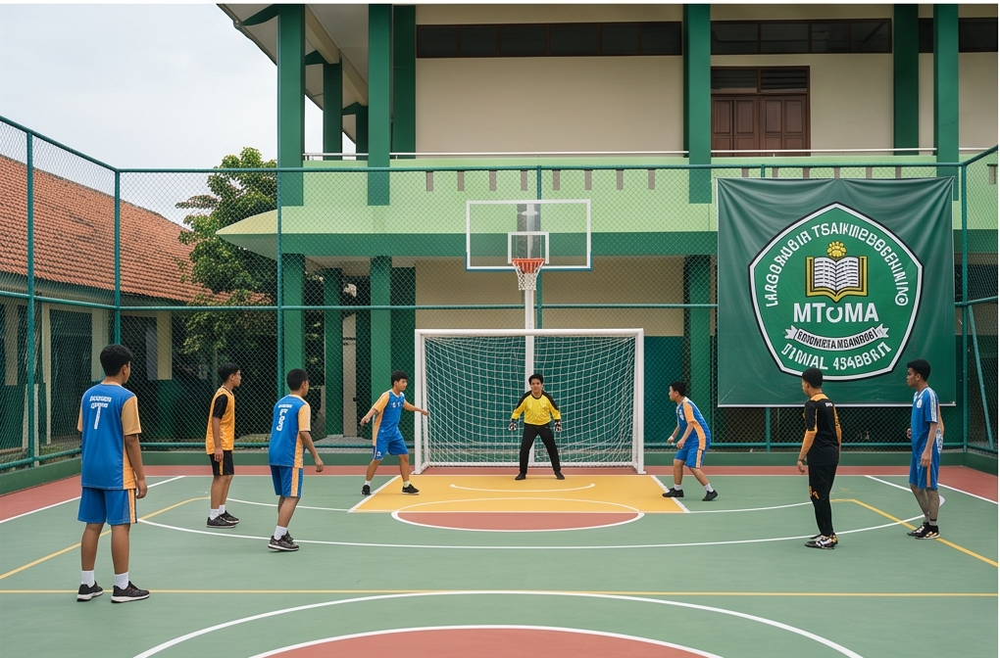
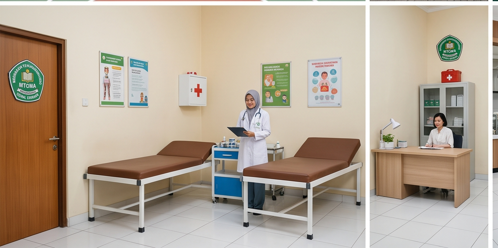
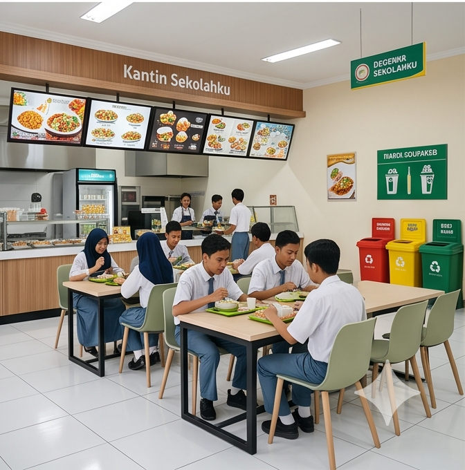

Fasilitas Infrastruktur Kampus
Kami berkomitmen menyediakan fasilitas yang lengkap, modern, dan nyaman untuk mendukung efisiensi proses belajar mengajar serta akselerasi potensi terbaik putra-putri Anda.
30
Ruang Kelas AC
5
Laboratorium
1
Perpustakaan E-Lib
3
Lapangan Olahraga
Full
Koneksi Internet

Laboratorium Komputer
Dilengkapi komputer berspesifikasi modern dan akses internet serat optik berkecepatan tinggi guna mendukung kurikulum pemrograman terapan serta digitalisasi mandiri.

Ruang Kelas Smart AC
Ruang kelas representatif yang bersih, dilengkapi fasilitas penyejuk udara, pencahayaan alami optimal, proyektor, serta pengaturan meja belajar ergonomis.

Masjid Utama Al-Huda
Pusat pembinaan karakter spiritual, ibadah jamaah harian, serta tempat pelaksanaan program akselerasi setoran hafalan Tahfidz Qur'an.

Lapangan Olahraga Terpadu
Sarana lapangan multifungsi ruang terbuka yang dirancang khusus untuk memfasilitasi kegiatan olahraga futsal, basket, voli, dan badminton siswa.

Ruang Medis & UKS
Ruang pelayanan kesehatan darurat pertama yang higienis, teratur, dan selalu didukung oleh obat-obatan esensial penunjang siswa.

Kantin Sehat & Higienis
Area kantin modern yang bersih, menyajikan hidangan makanan sehat bergizi yang dipantau ketat standar kelayakannya oleh manajemen internal.
Bagaimana Sarana Kami Mendukung Belajar?
Interaktivitas Proyektor
Setiap kelas dilengkapi proyektor digital terintegrasi untuk visualisasi materi ajar yang lebih padat.
Akses Internet Merata
Konektivitas jaringan internet nirkabel khusus disediakan penuh guna menunjang riset literasi digital.
Standarisasi Lab Sesuai
Perangkat komputer dan alat praktikum sains disesuaikan periodik mengikuti standarisasi kelayakan.
Lingkungan Edukatif Hijau
Area penataan taman hijau sekolah diposisikan strategis guna menyegarkan psikologis kenyamanan belajar.
Komitmen Pemeliharaan Sarana
Manajemen Yayasan Manba'ul Huda secara terjadwal dan berkala melakukan audit, perawatan teknis, serta peremajaan seluruh unit sarana prasarana. Hal ini merupakan jaminan utama kami untuk memastikan ekosistem sekolah selalu berada dalam kondisi aman, nyaman, dan siap beroperasi optimal menunjang akselerasi studi harian siswa.
FAQ Sarana & Fasilitas
Apakah laboratorium komputer diakses oleh seluruh tingkatan siswa? ↓
Ya, pemanfaatan laboratorium komputer dijadwalkan secara merata dan teratur baik bagi jenjang Madrasah Tsanawiyah (MTs) maupun Madrasah Aliyah (MA) untuk jam pengajaran IT/Coding.
Apakah jaringan internet sekolah difilter keamanannya? ↓
Ya, konektivitas WiFi sekolah menggunakan gerbang keamanan filtrasi konten khusus. Akses internet ditujukan hanya untuk keperluan modul edukasi, riset materi, dan dilarang keras untuk platform hiburan tidak mendidik.
Ingin Meninjau Langsung Fasilitas Kampus Kami?
Kami dengan senang hati mengundang Bapak/Ibu Wali Murid untuk melakukan kunjungan langsung, melihat ekosistem kelas, dan berdiskusi bersama panitia PPDB.